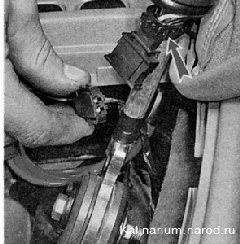
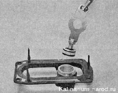

Привод механизма переключения передач снятие, разборка, установка и регулировка
Снятие привода механизма переключения передач может потребоваться при замене неисправных деталей (например, для замены порванного чехла тяги привода, поврежденную тягу привода). Указанные ниже последовательность и количество операций можно изменять в зависимости от цели работы.
Для выполнения работы потребуются помощник, а также смотровая канава или эстакада.
Снятие и разборка
1. Подготавливаем автомобиль к выполнению работы.
2. Очищаем резьбу стяжного болта хомута металлической щеткой. Обрабатываем место соединения тяги с шарниром и болт проникающей смазкой.
3. Ключом на 13 мм ослабляем затяжку гайки стяжного болта хомута.
4. Разжимаем отверткой хомут и сдвигаем его по тяге. Разжимаем отверткой тягу.
5. Протерев место соединения тяги с шарниром ветошью, помечаем взаимное положение тяги привода и шарнира.
6. Отсоединяем тягу от шарнира.
7. Отсоединяем реактивную тягу от основания шаровой опоры рычага переключения передач.
8. В салоне автомобиля тонкой шлипевой отверткой извлекаем заглушку из рукоятки рычага переключения передач.
9. Торцовым ключом на 13 мм отворачиваем гайку крепления болта рукоятки и снимаем рукоятку с рычага переключения передач.
10. Поддев отверткой, извлекаем чехол из накладки туннеля пола и выворачиваем чехол на изнанку.
11. Отсоединяем колодку проводов от выключателя соленоида блокировки заднего хода. Ослабляем или разрезаем пластмассовый хомут.

12. Снимаем выключатель с рычага переключения передач.
13. Снимаем облицовку туннеля пола.
При необходимости можно отвернуть четыре болта крепления опоры рычага переключения передач к кузову (см. ниже) и снять привод в сборе.
14. Ключом на 13 мм отворачиваем гайку болта крепления тяги к рычагу, удерживая болт от проворачивания вторым ключом того же размера.
15. Извлекаем болт из рычага. Выводим рычаг из вилки тяги. Снимаем металлические и пластмассовые шайбы, вынимаем металлическую дистанционную втулку.
16. Для смятия тяги привода, смазываем ее мыльным раствором и извлекаем из отверстия чехла.
17. Торцовой головкой на 13 мм отворачиваем три болта крепления кронштейна к кузову.
Четвертый болт крепления кронштейна отворачиваем накидным ключом того же размера (доступ к нему сверху закрывает воздуховод).
18. Снимаем кронштейн и чехол тяги привода. Порванный чехол заменяем.

19. Извлекаем из отверстия туннеля пола опору рычага переключения передач.
20. Съемником сжимаем стопорное кольцо шаровой опоры рычага и вынимаем его из основания опоры.

21. Вынимаем рычаг из основания опоры.

22. Поддев отверткой, снимаем верхнее уплотнительное кольцо.
23. Снимаем с рычага опору.
Сборка и установка
Собираем и устанавливаем привод в обратной последовательности. Перед затяжкой хомута тяги привода механизма переключения передач, регулируем привод (см. ниже).
Регулировка
1. Ослабляем затяжку хомута тяги привода механизма переключения передач (см. выше п. 2—4).
2. Приподнимаем нижнюю часть чехла рычага переключения передач (см. выше п. 10).
3. Смешаем рычаг переключения передач так, чтобы его нижняя часть рычага была перпендикулярна поверхности пола, а рукоятка рычага располагалась от подушки правого сидения на расстоянии, приблизительно равном 1/3 расстояния между передними сиденьями и удерживаем его в этом положении. При этом помощник, сместив хомут на 2-3 мм от торца тяги, затягивает гайку хомута.
4. Устанавливаем чехол на место и, пробуя включать передачи, убеждаемся в работоспособности привода механизма переключения передач.